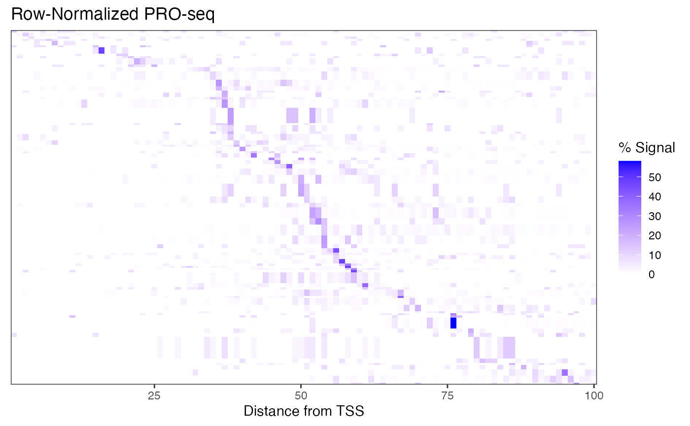

Count Signal by Region
The getCountsByRegion() function counts signal within regions of interest, and returns a simple vector.
library(BRGenomics)
data("PROseq")
data("txs_dm6_chr4")
counts_txs <- getCountsByRegions(PROseq, txs_dm6_chr4)
counts_txs[1:5]
## [1] 1 59 13 126 263
length(txs_dm6_chr4) == length(counts_txs)
## [1] TRUECritically, the default assumes the input is “basepair-resolution”. If the input data is run-length compressed (like a standard bigWig or coverage file), set expand_ranges = TRUE.
Count Signal by Position and Region
The getCountsByPositions() function will count signal at each position within each region of interest. By default, a matrix is returned, with a row for each region, and a column for each position.
# get first 100 bases of each transcript
txs_pr <- promoters(txs_dm6_chr4, 0, 100)
# get signal at each base within each promoter region
countmatrix_pr <- getCountsByPositions(PROseq, txs_pr)
class(countmatrix_pr)
## [1] "matrix" "array"
nrow(countmatrix_pr) == length(txs_pr)
## [1] TRUE
ncol(countmatrix_pr) == width(txs_pr[1])
## [1] TRUE
Again, be sure to know if your data is “basepair-resolution”, or if the ranges are compressed and should be expanded using the expand_ranges argument.
By default, each “position” (each column) is a single base, but counting can be done in bins as well:
# get signal in 10 bp bins within each promoter region
countmatrix_pr_bin <- getCountsByPositions(PROseq, txs_pr, binsize = 10)
countmatrix_pr_bin[1:5, ]## [,1] [,2] [,3] [,4] [,5] [,6] [,7] [,8] [,9] [,10]
## [1,] 0 0 0 0 0 0 0 0 0 0
## [2,] 2 1 7 1 0 0 0 3 2 0
## [3,] 0 0 1 0 0 0 1 0 0 0
## [4,] 0 0 0 0 0 0 0 0 0 0
## [5,] 0 0 0 0 0 0 0 0 0 0By default, an error is returned if input regions aren’t all the same size:
getCountsByPositions(PROseq, txs_dm6_chr4)## Error in .get_cbp_mw(hits, dataset.gr, regions.gr, binsize, FUN, smw, : regions.gr contains ranges with multiple widths, but simplify.multi.widths is set to 'error'. Did you mean to call getCountsByRegions instead?This is intended to avoid accidental use of getCountsByPositions() in lieu of getCountsByRegions(). However, for the rare case when users do intend to use multi-width regions, there is support for this using the simplify.multi.widths argument, which contains several useful options for how to do this (see the documentation for more details).
Example: Plot Signal Over a Gene
We can use getCountsByPositions() to get the signal profile over a single gene. Let’s have a look at the gene with the highest signal near the TSS:
Example: Plot Signal Heatmap
A typical use of getCountsByPositions() is to generate a heatmap of signal by position within a list of genes. The ComplexHeatmap package is well documented and offers a high level of functionality, but we can also use ggplot2 to generate customizable heatmaps.
To format our matrix for ggplot, we want to “melt” it. The package reshape2 can melt matrices into dataframes, but BRGenomics also provides a melt argument for several functions, including getCountsByPositions():
cbp.df <- getCountsByPositions(PROseq, txs_pr, binsize = 10,
melt = TRUE, ncores = 1)
head(cbp.df)## region position signal
## 1 1 1 0
## 2 1 2 0
## 3 1 3 0
## 4 1 4 0
## 5 1 5 0
## 6 1 6 0As you can see, the rows and columns of the matrix are now described in columns of this dataframe, and the signal held at each position is in the third column. Now we can plot:
## Warning: package 'ggplot2' was built under R version 4.1.2
ggplot(cbp.df, aes(x = 10*position - 5, y = region, fill = signal)) +
geom_raster() +
coord_cartesian(expand = FALSE) +
labs(x = "Distance from TSS", y = "Transcript",
title = "PRO-seq", fill = "Reads") +
theme_bw()
The high dynamic range of PRO-seq data means that regions (rows) with less signal are hard to pick out. To address this, we can row-normalize the data, and let’s sort the rows by the max signal position, as well.
# take only rows decent signal
row_signal <- rowSums(countmatrix_pr)
idx_signal <- row_signal > median(row_signal)
cbp <- countmatrix_pr[idx_signal, ]
# row-normalize
cbp_rn <- 100 * cbp / rowSums(cbp)
# get row order (by max position)
row_order <- order(apply(cbp_rn, 1, which.max), decreasing = TRUE)
# melt into a dataframe
rn_cbp.df <- reshape2::melt(cbp_rn[row_order, ],
varnames = c("region", "position"),
value.name = "signal")
ggplot(rn_cbp.df,
aes(x = position, y = region, fill = signal)) +
geom_raster() +
scale_fill_gradient(low = "white", high = "blue") +
coord_cartesian(expand = FALSE) +
labs(x = "Distance from TSS", y = NULL,
title = "Row-Normalized PRO-seq", fill = "% Signal") +
theme_bw() +
theme(axis.ticks.y = element_blank(),
axis.text.y = element_blank())
Note that this is not what a typical PRO-seq heatmap looks like, but this data is very sparse owing to the dot chromosome, low sequencing depth, and no genelist filtering.
Blacklisting
Many functions in BRGenomics support blacklisting, or the exclusion of certain sites from analysis. To use this feature, import your blacklist as a GRanges object, and use the blacklist option.
For instance, getCountsByPositions() supports blacklisting, and there is an additional option of whether to set all blacklisted sites to 0 counts, or to set those sites equal to NA. Setting them to NA is useful, as many functions have arguments to ignore NA values in calculations, i.e. mean(x, na.rm = TRUE).
Supplying a blacklist to metaSubsample() will result in blacklisted positions being ignored in the calculations. Regions for which some section overlaps the blacklist are not ignored entirely, but the blacklisted positions themselves won’t contribute to the calculations.